My Family
Abah
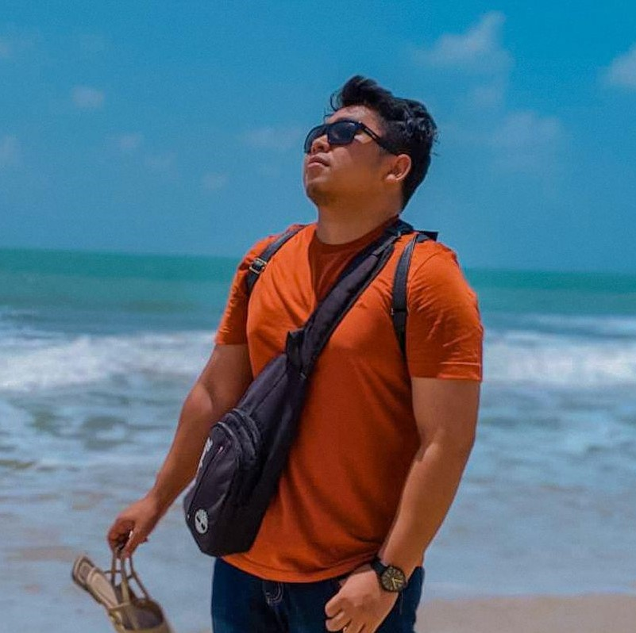Amel
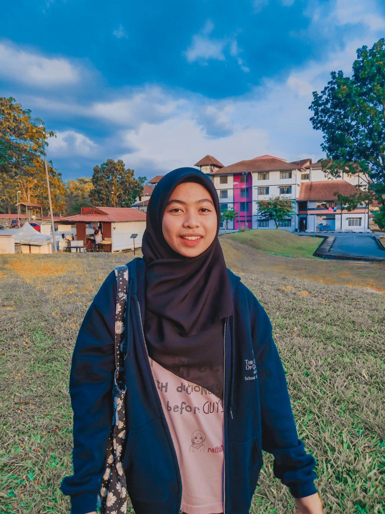Fatin
Mama
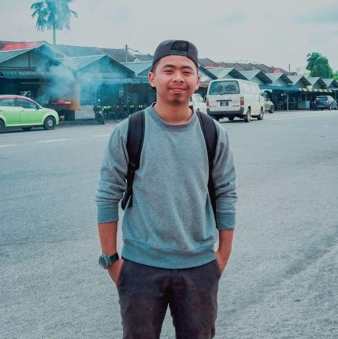Ija
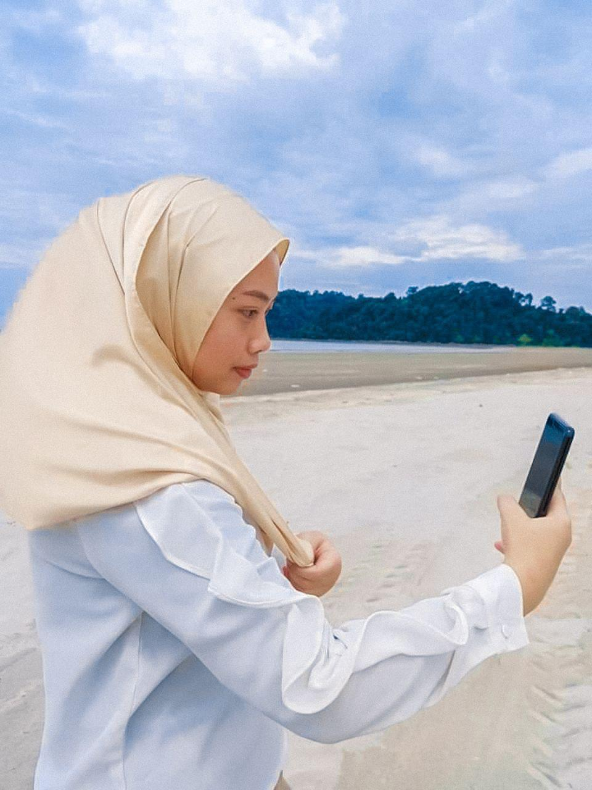Adik
Kakak
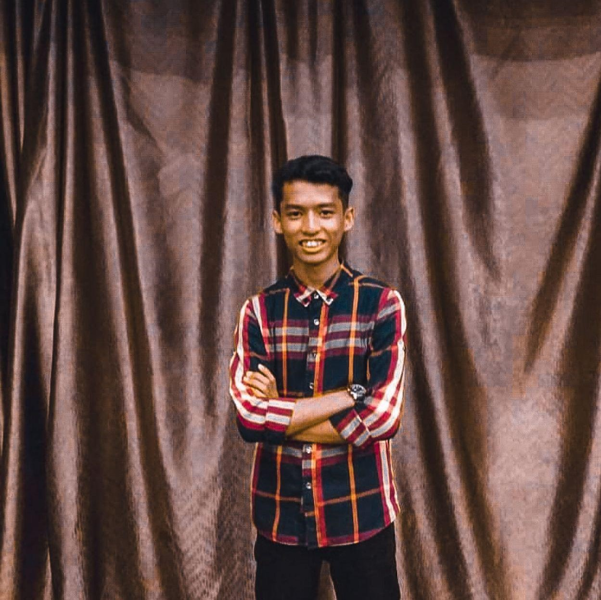Syahir
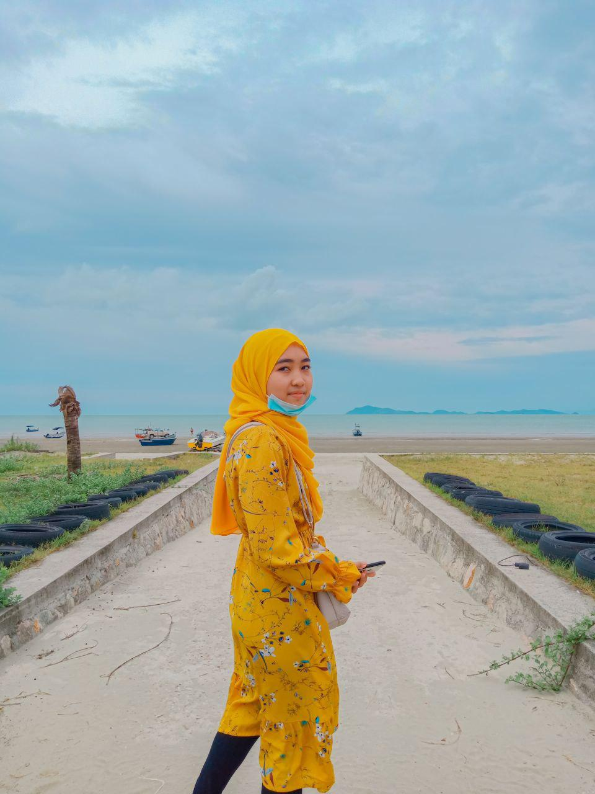Baby
Place that I want to TRAVEL the most
- Budapest
- Fuerteventura
EDUCATION

Journey of study
In my primary school, after finish my UPSR, I've got an offered for Kelas Aliran Agama (KAA) from SMK Simpang Renggam which was my secondary school that located 45KM from my house. Therefore, I live in the hostel of Asrama Simpang Renggam since form 1 until form 5. When I was form 4, I've got offered enter Account class which called it as Kelas Prinsip Perakaunan until form 5. I was also an active student back then, become Student Leaders Board (SLB) while at the same time also become Pembimbing Rakan Sebaya (PRS), join curriculum activity like chess, petanque and marathon. And many more. A lot of sweet memory keep in there. Next, in 2019, I got offered to enter university in course of Diploma of Library Management which located at UiTM Merbok, Kedah. My hope in 2021 is to be stronger and be better in the future.
- Fatin -
School
SK LKTP Kahang Timur, Johor
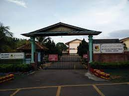 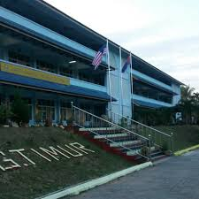
SMK Simpang Renggam, Johor
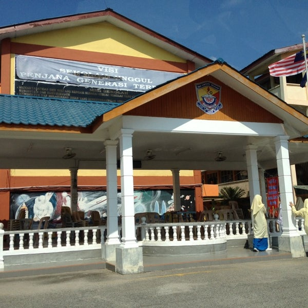
UiTM Merbok, Kedah
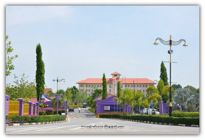
HOBBY
I personally love baking since it give me a feeling of accomplishment. When I bake at the same time it take away all of the stress and tension of the day.
"Find something interesting you're passionate about and keep tremendously interested in it."
- Julia Child -
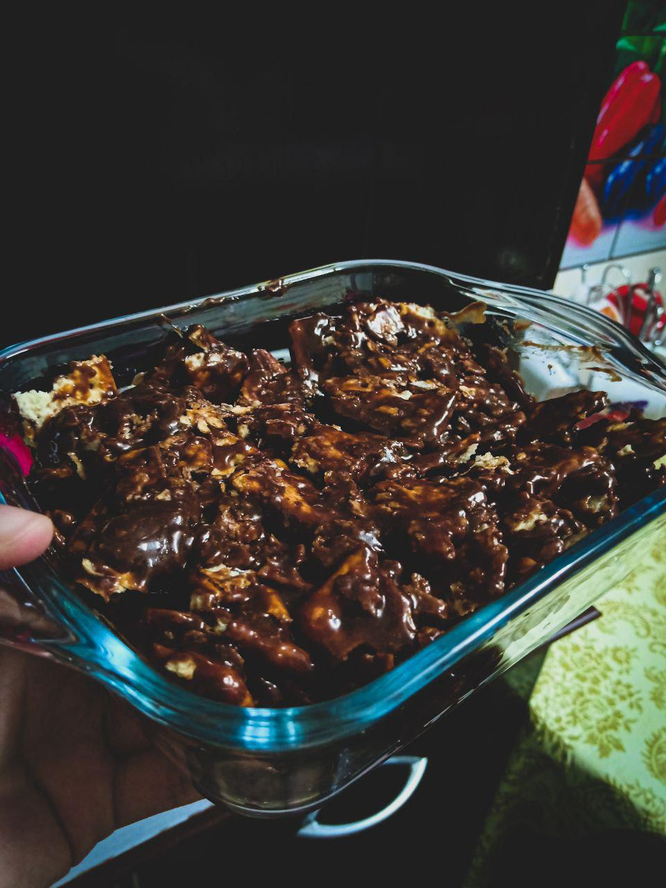 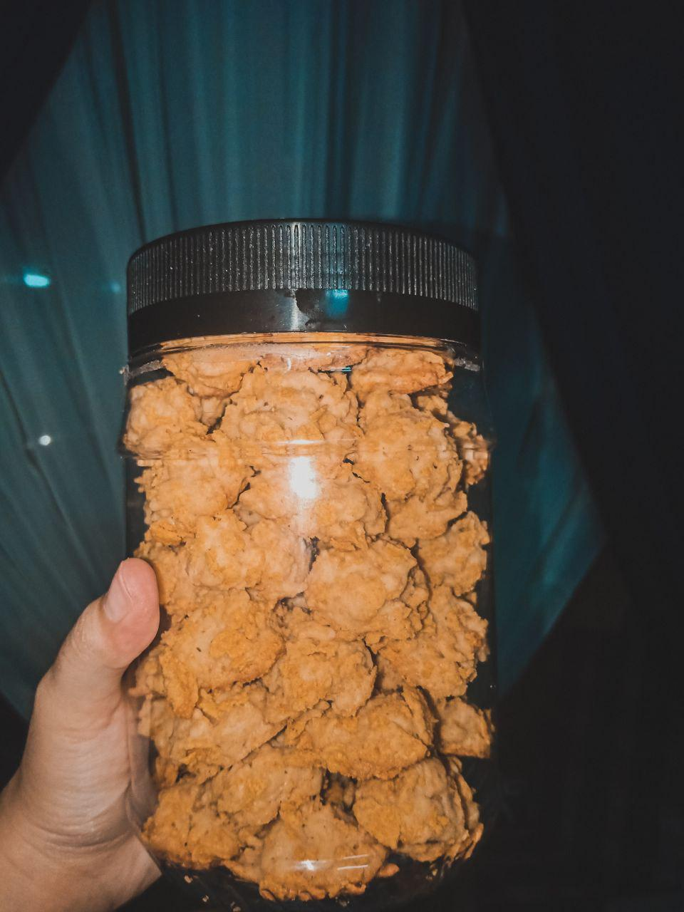 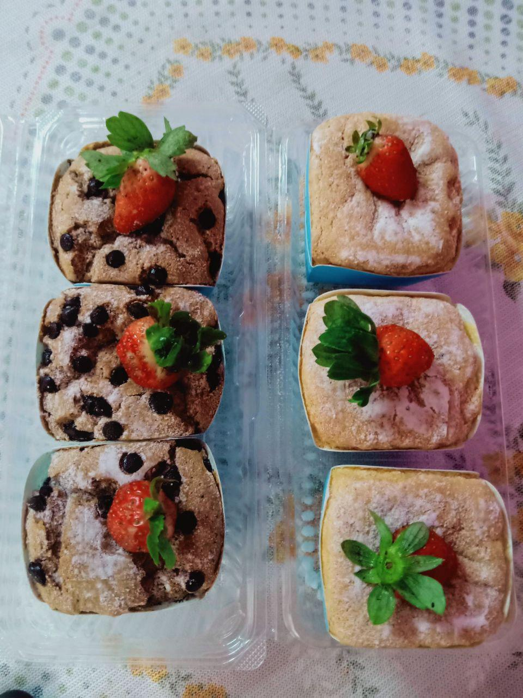